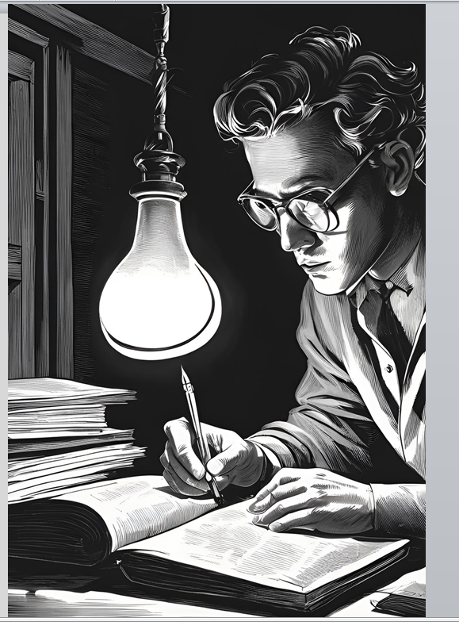
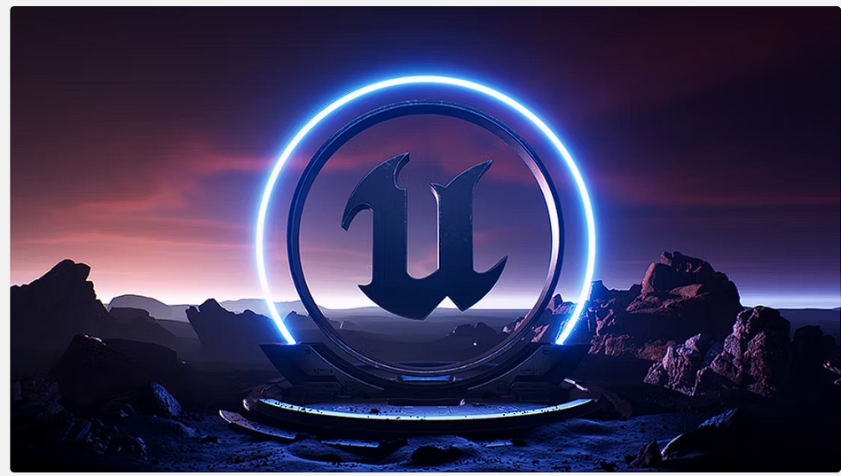
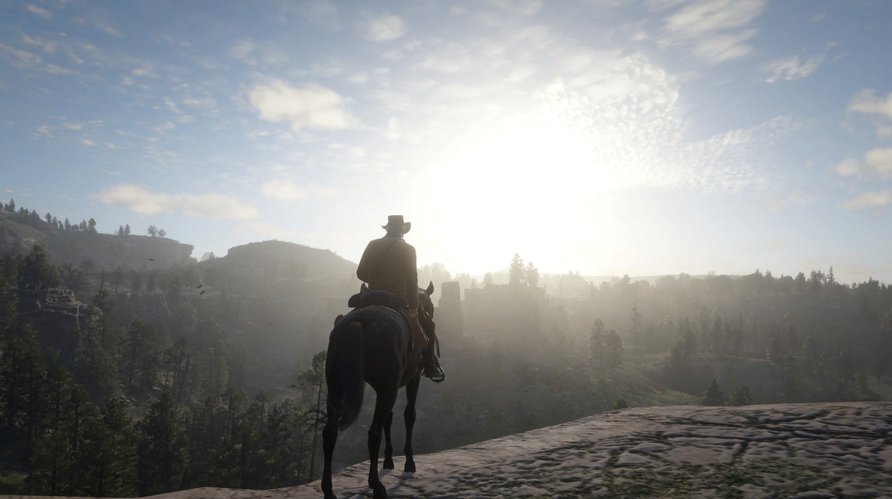

Intro

Hi, My name is Rathna kamal, A Computer Science Student and a freelnce writer and annimator . Motivated and detail-oriented Junior Technical Specialist with a strong foundation in programming, problem-
solving, and creative media tools. Proficient in Python, Java, and Unreal Engine, with hands-on experience in designing innovative solutions and collaborating on complex technical projects. Seeking to contribute my
expertise and adaptability to cutting-edge technical initiatives. By the way, check out my awesome work.
If you like my work (IF you checked it) or my projects fell free to contact me through my email;rathnakamljonnalagadda2004@gmail.com. Thank you fot taking time to check my portfolio "Have a Wonderful day and Glorious Life"
Work abd Experience

For the past couple of years I have Authored more than six stories blending science fiction, drama, action with reader's ratings being 8-9 out of 10, specilazied in creating multi-layered plots, vivid details and blending geners for diverse audience seamlessly.I have completed my Course modeling, animations and Blureprints Using Unreal Engine 5 which helpend in creating 3-D environments tat can enchance the story experience,Unreal Engine Course, By the way, check out my awesome skills.

I was also a Technical lead in one of University events held by GeeksforGeeks as Techinical co-Ordinator and analyst.Managed technical setup for gaming tournaments, troubleshooting hardware and software to ensure seamless operation.Collaborated with a team to engage over 300 participants, earning "Best Entertainers" recognition for innovative event execution.Currently I am Team Leader snd Technical Lead in my Group Project to calculate and Analysis of Geographical Water-footprintsDeveloped Python-based algorithms to analyze water efficiency, achieving 50–70% optimization metrics.
Led a team of 5 to complete the project under tight deadlines, Created data models using Python and Google Colab, optimizing water resource management for agriculturePresented findings to university stakeholders, raising awareness about sustainable resource usage.
You can check my projects using my Github link Given,My Github Profile
skills

My skills are as follows:
.Python,
.SQL(Basic),
.Front-end coding, Back-end coding,
.Design Thinking,
.Unreal Engine(Animation and Modeling).
In a team or by my self:
Report writing ,
Good Communication skills,
Critical thinking,
Proactive, self-motivated,
Good organizational skills.
Hard working.
Languages:
English,
Spanish,
French,
German,
Japanese.to contact me, check out at the end of my Introduction.
I have also learned• Creating and designing levels in Unreal engine using Blueprints along with Modeling and Animation.
• Knowledge and usage of ‘Graphical Interface’, ‘Drag and Drop’ along with ‘Accessibility’ In a given Blueprint for ‘Unreal Engine-5’.